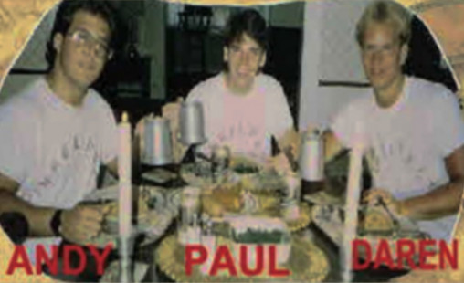
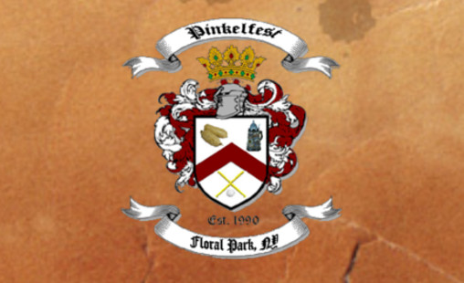

Est. 1990
Pinkelfest XXX - Back to Basics II will be held Saturday, July 11, 2020 with a $75 fee.
If Pinkelfest is unable to be held on that date due to Covid-19,
we are looking to bump it back to October for a true German Pinkelfest / Octoberfest.
If you can no longer attend the original date (Saturday, July 11, 2020) due to Covid-19 or the new date if Pinkelfest moves to October,
you can get your money refund, or roll it over to Pinkelfest 2021 - your call.
Contact Paul Meyfohrt if you are attending or not!

"What began as a simple question, has turned into an annual gathering." Pinkelfest is our own little Holiday. What began as a simple question has turned into an annual gathering where friends eat, drink and play wiffle.

Pinkelfest has had many themes over the past 30 years. What's a great way to celebrate Pinkelfest's 30th year anniversary? Going back to basics! The year of the first rendition of this theme, may be a trivia question for our Pinklelfest version of Jeopardy / Family Fued!
Follow Pinkelfest on Twitter to view our latest tweets!

Follow Pinkelfest on Instagram to view our latest photos!